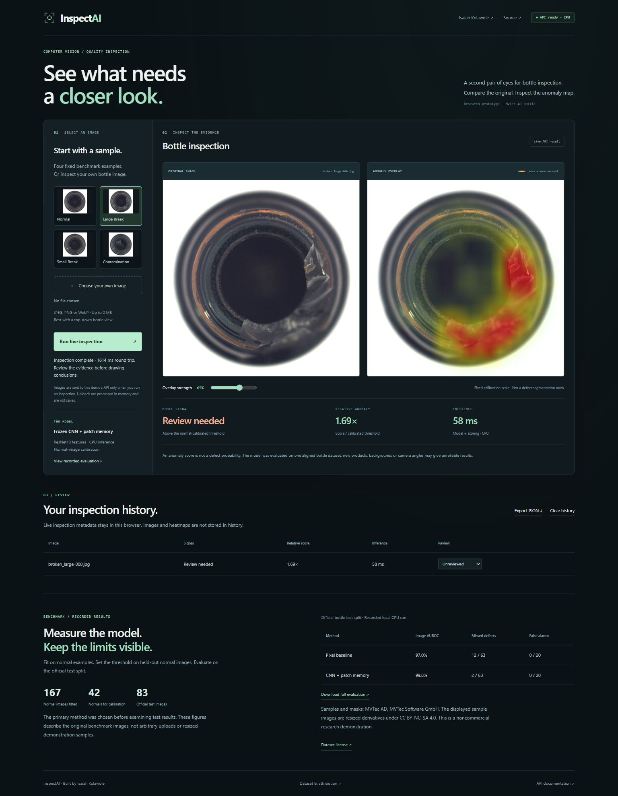

A closer look.
A measurable signal.
InspectAI compares a bottle image with normal visual features and highlights unusual regions. A working model API connects the inspection workspace to a reproducible evaluation.

01 / THE PROBLEM
Find unusual regions without fitting on defects.
A manufacturing inspection system may have many normal examples and fewer examples of what can go wrong. This project asks whether normal visual features can supply a useful review signal.
The first version focuses on one aligned bottle category. It separates a model’s anomaly signal from a human reviewer’s judgment, and keeps the original image beside the heatmap.
02 / THE MODEL
Frozen features. Normal patch memory.
The image score averages the three largest patch distances. Feature channels use the normal-fit standard deviation; the threshold is the 95th percentile of held-out normal image scores.
This is an independently implemented, simplified patch-memory approach inspired by normal-feature methods such as PatchCore ↗. It uses random stratified sampling, not a greedy coreset, and does not claim to reproduce the paper’s results.
03 / THE EVALUATION
One official test split. Both methods.
The 209 normal training images are split into 167 fit and 42 calibration images with seed 42. All 83 official test images—20 normal and 63 anomalous—remain outside fitting and threshold selection.
| Method | Image AUROC | Missed defects | False alarms |
|---|---|---|---|
| Pixel-statistics baseline | 0.9698 | 12 / 63 | 0 / 20 |
| CNN + normal patch memory | 0.9976 | 2 / 63 | 0 / 20 |
AUROC measures ranking, not percent accuracy. The primary method and its settings were fixed before examining test results. Threshold confusion counts use normal-only calibration; test labels did not choose the threshold.
Median local inference was 46.21 ms for the CNN method and 23.66 ms for the baseline, including file decoding. These are local CPU timings; network and server startup add latency.
Inspect all scores and split files04 / THE LIMITS
Two contamination defects were missed.
The model placed contamination/003.png and contamination/019.png below the review threshold. Those are visible failures, even with a strong overall ranking score.
Zero false alarms among only 20 normal test images does not establish a zero false-alarm rate. New bottles, lighting, backgrounds and camera views are outside the measured scope.
The heatmap uses a fixed normal-calibration scale rather than stretching every image’s colors. It indicates unusual feature regions, and is not a verified segmentation mask. Pixel AUROC in the downloadable report uses masks and maps resized to 40 × 40.
The four demonstration samples are resized JPEG derivatives and are scored separately. The benchmark metrics use the original test PNGs. Independent data and camera-shift evaluation are the next steps.
05 / THE PRODUCT
From measured model to working inspection.
The FastAPI endpoint accepts bounded JPEG, PNG and WebP uploads, runs ONNX inference on CPU, and returns the review signal, anomaly heatmap and timing. Images are decoded in memory and are not persisted by the application.
The initial sample view clearly marks its saved result. Running a live inspection calls the deployed API. Review history stores metadata in the browser; users can confirm a signal, record a false alarm or missed issue, clear the history, and export JSON.
Fourteen automated checks cover artifact hashes, split separation, model calculations, real API inference and upload failures. A Dockerfile supplies a non-root container configuration; it is not presented as a tested container deployment.